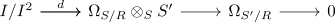

quotient sequence of cotangent module
Proposition
Let $R \rightarrow S$ be a ring-homomorphism and let $f: S \twoheadrightarrow S'$ be a surjective (?) ring-homomorphism with kernel $I$. Then the following sequence of $S'$ modules is exact

Proof
observe that there exists a commutative diagram
\begin{displaymath}
\begin{tikzcd}
& I \otimes_{S} S \rar \dar & \rar \dar S \otimes_{S} S & \rar \dar \Omega_{S/R} \otimes_{S/R} \otimes S \dar \\
I^2/I \rar{\cong} & \rar I \otimes_{S} S/I & \rar S \otimes_{S} S/I & \rar \Omega_{S/R} \otimes_{S/R} \otimes S/I
\end{tikzcd}
\end{displaymath}where $S \rightarrow \Omega_{S/R}$ is the universal derivation.
We need to show that the cokernel is $\Omega_{S'/R}$.
So let $S \rightarrow M$ be an \(S\)-derivation where the $S$ module structure of $M$ comes from the restriction of scalars of an $S'$ module structure. Then we claim that $\partial$ factors through $S \twoheadrightarrow S'$ if and only if $\partial_{I} = 0$. one direction is clear, so suppes $\partial_{I} = 0$. Then $\partial$ factors as a map of sets through $S/I$ and the induced $\overline{\partial}$ is a derivation (todo: )
Now this shows
where $d$ is the universal derivation